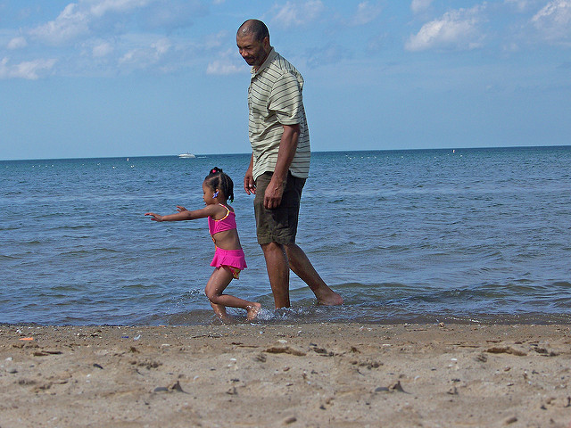
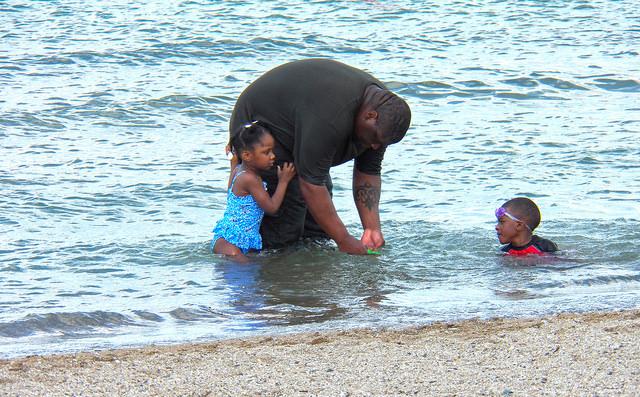
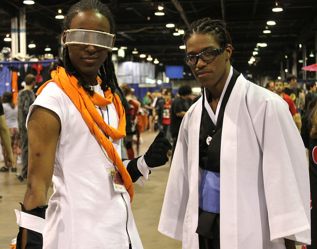
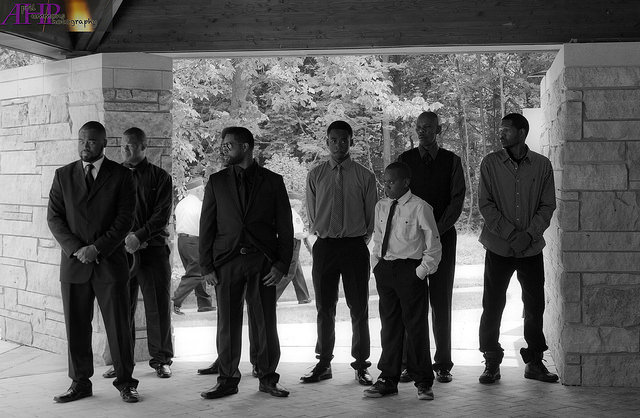
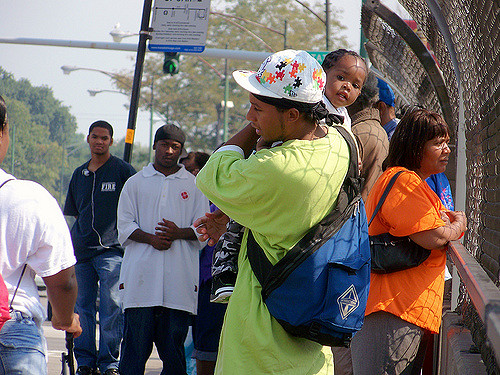
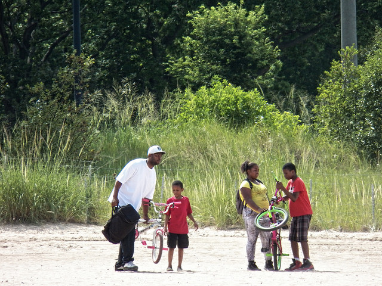

Image and Context: Changing the Narrative with Photos
Home
Protest
Black Genocide
Blog
Contact
Black Fatherhood

Daddy's Girl at the Beach

Beach Day 2015
The Black Male

Bleach Cosplay at ACEN

Men
Humanizing Black People
Love

Hey Baby
Family

A Real Black family